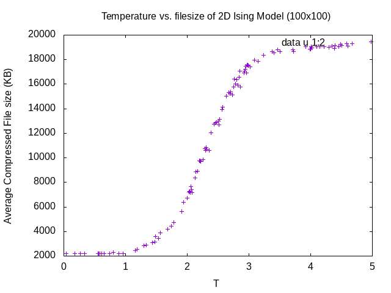

Compression and the ising model
tags: trash, physics, information-theory, simulation, cs
status: in-progress
first draft: Jul 10th, 2019
recent update: Nov 7, 2020
UPDATE: since taking stat-mech, this post is pretty garbage but i'll leave it up for posterity. might do a redux on this later. read at your own risk.
some background if you need it
Recently (2019) as I was doing some reading1 on applying information-theoretic approaches to the detection of phase transitions in non-equilibrium systems. What does non-equilibrium mean? In this case, we're talking about thermal equilibrium, since this is the hypothesis required to apply the usual methods of thermodynamics to solve for bulk properties of a system (Heat capacity, internal energy, entropy, …). Without this hypothesis, we can't apply our main statmech tools (maximization of entropy, microstates equally likely) in deriving relevant quantities.
So what's the deal with information in non-equilibrium systems? In equilibrium systems we have all the agency in the world to apply thermodynamics and probe phase transitions of the system. But we don't necessarily have these tools for an athermal system! But this doesn't mean that there isn't information hiding in the system, in general we can still make counting arguments about the distribution of states in a system even if thermal equilibrium isn't there. What we are "counting" is going to be what saves the day, and this is where some information theory comes into play. We can use a (non thermodynamic) entropy to probe the system \(S = -\sum p_i \ln p_i\). Mr. Levine and company used an information-theoretic approach to the ising model and found some amazing results!
As a fun way to learn a little bit of javascript from the 90s, I spent some time looking at Schroeder's web-based physics simulations you can find here. As you might have guessed already (good guess, not bad), I looked at his ising model simulation. It's straightforward to implement this myself (read on!) but sometimes you just gotta mess around a bit.
Information
We'll talk a little about information content first. If you've taken a course in thermodynamics or statistical mechanics, you've probably (hopefully (please)) seen some mathematical definition of entropy. It comes in a bunch of different looking equivalent forms, but the one I'll give to you here is
\[ S(X) = -k_{B} \sum_{i} p_{i} \ln\, p_{i} \]
where \(p_i\) is the probability of finding the system in state a \(i\) and \(k_B\) is a scaling factor in units of \(Joules/Kelvin\) so make the \(SI\) unit system consistent. If you're in thermal equilibrium, \(p_i\) follows a boltzmann distribution in energies \(E_i\), a one-parameter family over \(T\). The advantage of using this form will be soon-evident.
Either way, dang isn't that a good-looking equation. There's a lot of content in why each part of the expression is chosen. Sometimes the entropy is explained to be how "disordered" a system is, which I don't quite like (e.g it's not clear water-oil phase separation is the result of "disorder"). This equation says something more specific.
First of all, this quantity is never negative (saved by the \(-\) sign out front) since \(0 \leq p_i \leq 1\) for all \(i\), making \(\ln p_i < 0\).
If we choose a different base for the logarithm (say, base \(2\)), then the sum is actually long-hand for \(E[-\log\,p_{i}]\), the expectation value of the negative log-probability. Lets riff on this.
Since \(0 \leq p_{i} \leq 1\), in log base 2, this is giving us the expected number of bits that we would need to encode the frequencies of states for our system. So it's giving us a "best guess" on the amount of information needed to completely describe our system in all of its probabilistic glory. This also tells us how much "wasted" space there is in the system
The Shannon entropy is going to look familiar. If \(X\) can take on the values \(\{x_1,x_2, \cdots, x_n\}\):
\[H(X) = \sum_{i} p(x_i) \log\, p(x_i)\]
where \(p(x_i)\) is the probability of the event \(X=x_i\) occuring. As the stereotypical example, let's say \(X\) can take on the value \(heads\) or \(tails\) with equal probability. The same analysis above holds here, we're just not caring about units (more or less) or the second law of thermodynamics anymore (scary, I know).
Note that you need to know a prior the probability distribution \(p(\cdot)\) over the set of possible states of the system. In thermal equilibrium, we can approximate this distribution to incredible accuracy due to the regularity of the underlying mechanics of such a system. Without thermal equilibrium, we have no way of knowing, in general, \(p(\cdot)\) a prior! what a pain! We'll see how encodings come to the rescue on this issue later.
statmech game of life (better known as the ising model)
Now what exactly is the ising model? If you took CS31 at Swarthmore Collegetm you'll note that some of the finite-sized simulations look a bit like a game of life model, but are in general more chaotic-looking depending on the temperature. Just like in GoL, we're given a discrete grid of dimensions \(N \times M\), where each cell of the grid \(c[i,j]\) can take on two possible values. In the case of the ising model, we'll take the state space to be \(\mathcal{A} = \{-1, 1\}\). These states represent "spin up" and "spin down" respectively, which corresponds physically to the magnetic dipole moments of the atomic spin of an atom (a good model for simulating the magnetics of some hot metals). We'll denote a microstate of length \(n\) chosen from this alphabet as \(\mathcal{S}_{n}\equiv \{s^{1}, \cdots, s^{n}\}\), where \(s^i \in \mathcal{A}\). As for the dynamics, we get the whole picture just by looking at the Hamiltonian for a given state:
\[H(\mathcal{S}_N) = -J\sum_{i, N(i)} s^i s^{N(i)} - \mu \sum_i B s^i. \]
Here I denoted the neighbors of cell \(i\) as \(N(i)\). Couldn't think of any better notation, so we'll deal with it.
Breaking this down, we can see that the first term represents the interaction between two cells that are neighbors and the second term represents the bias given by a uniform magnetic field imposed by the environment. This bias will skew the net magnetics towards one of the spin directions (this bias is akin to giving an intercept to a straight line).
So since we have all the power, we're going to drop the second term! You can keep it if you want. Feel free to voice your concerns. So, but what about the dynamics? Well hold your horses. Since we're in thermal equilibrium, the probability of a specific configuration being chosen is given by the classic Boltzmann distribution, which factors in the energy of any particular microstate (\(\mathcal{S}_{n}\) from before):
\[ P_{T}(\mathcal{S}_{n}) = \frac{e^{\frac{-H(\mathcal{S}_{n})}{k_B T}}}{Z_{T}} \]
Let's check some asymptotics first: If every cell is the same spin, then the energy simply \(-J\sum_{i,N(i)}1\). If we apply periodic boundary conditions and allow every cell to have four neighbors, then we get something like \(H = -4NJ\). This is a probability-maximum according to \(P_T\), so this is a pretty likely state, all things considered. Then in the extreme where every neighbor of a cell is the opposing magnetization, \(H = 4NJ\) and its corresponding probability is at a minimum. So by continuity or something, the system will favor confiugrations that are at least locally uniformly magnetized.
But as we vary \(T\), we would expect the system to be more disordered as the probability distribution smooths out due to the exponential argument tending towards \(0\) (and therefore \(P_{\infty}(\mathcal{S}_{n}) \rightarrow 1/(\# total\,\,\, microstates)\)). Something to keep in mind!
So how would we simulate something like this? Well, being the statistical mechanicians we are we're well prepared for this: for the not final time, we're in thermal equilibrium! This means that energy transfer is short-ranged and localized. Then, given a system state \(\mathcal{S}_{n}\), we're justified in flipping only one atom from one magnetic state (quasi-static transition between states, reversible, words that mean something to some people). How do we choose this atom? We put on our computer scientist hat and say "well, nothing Monte Carlo simulations can't solve," which is an annoying way of saying "randomly choose values from a probability distribution one at a time". So we say, given our state \(\mathcal{S}_{n}\), flipping atom \(i\) results in the new state \(\mathcal{S}'_{n}\). We choose a new state \(\mathcal{S}'_{n}\) with probability given by \(P_{T}(\mathcal{S}'_{n})\). Not so bad on paper!
ok ok i get it gimme the cs
So this is just nonsense that I was doing on a slow day over the summer.
grabbing some of those magnets
Okay with that over, we can talk about Schroeder's simulation. If
you do a little bit of snooping in the source, you'll find the
javascript src block that implements this simulation
procedure. It's pretty fast, considering its javascript! As you may
have read from the preface of the simulation, he made this as a
proof-of-concept, the concept being that javascript driven
web-simulations can be fast enough to be useful as a pedagogical
tool (compared to downloading some old jar file from PhET).
But we're going to one-up PhET and instead of downloading the simulation, we'll just download every frame of the simulation. Take that!
First we need to take snap-shots of the images that the <canvas>
element is displaying on the web page. To do this, we can use the
function toDataURL given by the canvas element and have that hold
the image data. Then, we create a new hyperlink element <a> and
"click" on it. Wrap it up in a function and we have our guy. This will
prompt many, many (many) download requests, so don't forget to mark
"Remember this option" or whatever your computer calls it.
/* Download a single img */ function download(T,i) { var link = document.createElement("a"); link.href = canvas.toDataURL("image/png"); link.download = "T"+ T.toString().replace(/\./g, 'p') + "/" + "ising" + i + ".png"; link.style.display = "none"; var evt = new MouseEvent("click", { "view": window, "bubbles": true, "cancelable": true }); document.body.appendChild(link); link.dispatchEvent(evt); document.body.removeChild(link); console.log("Downloading..."); }
Then, we download the png file image for this iteration step. Now,
I don't know about you, but my browser is going to be very upset
with the number of images being downloaded. So don't forget to check
the "remember for next time" box. For your own safety.
function simulate() { if (running) { // Execute a bunch of Monte Carlo steps: ... download(T,i); ... } }
You can make some other modifications, such as randomizing the temperature to
be within a range (e.g. for \([1.8,3]\) assign T = 1.8+Math.random()*1.2).
Don't forget to round if you want. I'm not ur parent
dealing with all the files
All the files downloaded were given a name in the format T$(temp)_ising$(i).
Now all we need is to make a directory with name T$(temp) and we'll be
all sorted to make some graphs probably.
(let ((dir "~/sum19/ising/Temps/100x100/")) (dolist (F (f-glob "~/Downloads/T*ising*")) (let* ((full-temp (first (last (split-string F "/")))) (only-temp (first (split-string full-temp "_"))) (temp-dir (concat dir only-temp "/"))) (mkdir temp-dir t) (rename-file F temp-dir))))
Then we get the file size of each png file and average over the
temperature. In the process, we also output an org table that we
can easily feed into gnuplot. It's not the best Elisp ever written,
but it gets the job done.
(defun traverse-temperatures (temp-list output) ;; Traverse through the temperature directories to find out the ;; average file size obtained. Tail recursive! (if (= (length temp-list) 0) output (let* ((dirname (car temp-list)) (temp-string (first (last (split-string dirname "/")))) (temp-value (substring temp-string 1 (length temp-string))) (filesizes (mapcar #'(lambda(x) (file-attribute-size (file-attributes x))) (directory-files dirname t ".*png")))) (traverse-temperatures (cdr temp-list) (concat output (format "|%s |%d|\n" (replace-regexp-in-string "p" "." temp-value) (/ (reduce #'+ filesizes) (length filesizes)))))))) (traverse-temperatures (directory-files "~/sum19/ising/Temps/uniform_init" t "T.*") "#+TBLNAME: TvsS\n|T | filesize|\n|------+-----|\n")
Now all we have to do is plot the data that we grabbed from system
statistics. To do this, we feed the above table into the amazing
gnuplot and make a simple graph of points in a region of interest
(\(T∈[0,5]\)).
Maybe a second to talk about what we're going to expect here. At low temperatures, file size will be smallest since the system will stay roughly uniform. As we increase the temperature, there will be a corresponding increase in the background noise of other spins. Close to the critical point, we would expect islands and blobs to start forming. After the critical point, things will become very noisy and there will be some upper-bound on the compressed file-size, corresponding to a maximally "random" configuration. Then qualitatively, we may expect the critical point to be the inflection point of information content. Who knows.

So that's cool. We can probe the critical points of some order parameter (in this case, an approximation of information entropy)! It turns outtm that this is the critical point of the Ising model where a phase transition occurs.
anything more? well sure
So that's great and all but it could be faster and less hack-y, and
I need an excuse to get back to C.
But how will we make nice looking videos and graphics with C? I'm
glad you asked thank you. There are these amazing file formats known
as the Netpbm file formats. A stream of these can be piped to a good
video encoder (like x264) to an mp4 which you can view to your own
pleasure. You can find the code on github (nothing to write home
about, short at around ~\(90\) lines).
Usage:
./ising | x264 --fps 60 -o video.mp4 /dev/stdin
If you'd like a gif to use (say, at 30fps for 3 seconds), you can also run ffmpeg:
ffmpeg -i video.mp4 -r 30 -vf scale=512:-1 -ss 00:00:01 -to 00:00:04 video.gif
So the following is really just an implementation of Schroeder's algorithm in
C. Which is an application of the MCMC Metropolis-Hastings algorithm.

Figure 2: N=500, 1k sweeps at T=2.2691 (close to critical point)
It's bigger faster better stronger. Might do some correlation length analysis with this code sometime in the future. tune in for more shenaingans I guess.
FAQs that no one asked for
why do this when u already have an analytic expression for entropy
well first of all its cool and that's all the explanation i need.
But other than that, this is more of a proof-of-the-concept that more complicated systems with more subtle order-disorder phase transitions could possibly be probed by the information content of the system. Even for non-equilibrium systems! Amazing! (See 1)
why lisp
i reserve the right to withhold a response to this
Footnotes:
An amazing paper by Dov Levine and his group on the usage of information entropy to detect order-disorder phase transitions: https://journals.aps.org/prx/abstract/10.1103/PhysRevX.9.011031